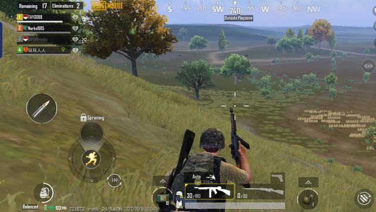

Techno.co.id -Oppo tak cuma mengeluarkan satu smartphone Reno8 saja. Selain Oppo Reno8 5G, ada juga Oppo Reno8 varian 4G yang menawarkan harga paling ramah kantung dibandingkan saudara-saudaranya di Reno8 Series. Meski menjadi yang paling "bungsu" di Reno8 Series, namun Reno8 4G menawarkan berbagai spesifikasi dan fitur-fitur yang tidak boleh dianggap remeh.
Desain
Di sektor desain, Reno8 membawa desain Retro Ultra Slim yang disempurnakan dengan teknologi Oppo Glow, membuat ponsel ini tahan terhadap goresan ringan dan bebas sidik jari. Perangkat ini memiliki tebal sekitar 7,49 mm dan berat sekitar 176 gram.
Dalam genggaman, desain smartphone yang lebih kotak dan tipis harus diakui lumayan enak. Material belakangnya pun juga bebas sidik jari dan goresan ringan, meski sedikit agak licin. Bobot ponsel yang ringan juga enak saat dibawa-bawa. Untuk bentuk desainnya sendiri cukup berbeda bila dibandingkan dengan saudara-saudaranya, khususnya varian Reno8 Pro dan Reno8 5G.
Penampang kamera di Reno8 4G masih terlihat terpisah dan berdiri sendiri dari bodi smartphone, tidak seperti varian Reno8 yang lebih tinggi (kecuali Reno8 Z 5G), yang penampangnya sudah menyatu dengan bagian belakang HP. Jadi secara desain, varian 4G dari Reno8 masih mempertahankan ciri khas pendahulunya, berbeda dengan Reno8 5G atau Reno8 Pro 5G yang sudah mengarah ke desain flagship ala Find X.
Layar dan Performa
Techno.co.idOppo Reno8 4G mengusung layar 6,4 inci AMOLED Display dengan 90Hz refresh rate. Menurut saya spesifikasi dan fitur ini sudah cukup nyaman dan enak di mata untuk pemakaian sehari-hari.
Sensitivitas layarnya juga oke, termasuk untuk pemindaian sidik jari yang sudah ada di bawah layar. Buat sekadar nonton YouTube atau browsing, ponsel ini sudah enak di mata. Untuk dapur pacunya, Reno8 membawa prosesor Qualcomm Snapdragon 680 4G.
Reno8 memiliki konfigurasi RAM 8GB yang dapat ditambah dengan ekspansi RAM hingga 5GB, serta ROM 256GB yang dapat diperluas dengan tambahan kartu microSD sampai 1TB.

Buat main game-game mainstream seperti PUBG Mobile, Stumble Guys, atau Pokemon Unite pun juga lumayan enak. Untuk Pokemon Unite sekitar 40 menit, bodi belakangnya tidak terlalu hangat. Dipakai main Stumble Guys 10 menit ponsel sama sekali tidak panas. Sementara untuk PUBG Mobile setengah jam setting tertinggi di balanced medium cuma sedikit hangat dan masih wajar.
User interface dari perangkat ini juga mudah untuk dipahami. Fitur menarik lain seperti Air Gestures juga dipertahankan di sini, meski untuk memakainya lumayan susah susah gampang buat yang tidak terbiasa.
Suara dan Baterai
Techno.co.idSalah satu kekurangan dari smartphone ini menurut saya adalah perangkat ini cuma punya satu speaker. Sehingga, suara dari speaker yang dikeluarkan terasa biasa saja walapun tidak jelek. Untuk mendengarkan podcast atau ngobrol-ngobrol biasa, kualitas suaranya masih enak didengar, termasuk dengan volume maksimal. Namun terasa agak pecah saat memutar lagu-lagu rock dengan volume maksimal.
Reno8 membawa baterai sebesar 4500mAh dan mendukung pengisian daya 33W SuperVOOC. Pengisian daya dari 19 persen selama setengah jam, baterainya terisi sampai 69 persen. Dipakai YouTube setengah jam berkurang 4 sampai 5 persen. Untuk main Pokemon Unite 40 menit berkurang 7 persen, buat Stumble Guys selama 10 menit cuma kurang 3 persen, dan untuk PUBG Mobile setengah jam berkurang 5 persen.
Untuk sektor baterai terbilang cukup untuk dipakai sehari-hari, di mana pengisian daya cepatnya masih jadi fitur yang patut dipuji meski tentu tak secepat varian Reno8 yang lebih tinggi.
Fotografi
Techno.co.idOppo Reno8 di Indonesia membawa fitur Ultra-Sensing Selfie melalui kehadiran sensor IMX709, 30x Microlens, dan Bokeh Flare Portrait. Di Oppo Reno8, Oppo menyematkan kamera depan 32MP IMX709, dengan kamera utama 64MP AI Portrait Camera, 2MP Micro Lens, dan 2MP Depth Camera.
Meski tak se-powerful varian 5G atau Pro dari Reno8, Reno8 4G tetap tak boleh diremehkan soal fitur fotografi. Untuk jepret-jepret di siang atau sore hari, gambar yang dihasilkan terbilang bagus dengan tampilan warna yang oke. Sementara untuk malam hari, kualitas foto baik warna maupun detail, memang menurun secara signifikan meski tidak bisa dibilang jelek. Masih cukup layak dipakai untuk penggunaan sehari-hari.
Salah satu fitur foto yang paling saya sukai tentu saja kamera Makro yang dibantu dengan Orbit Light sebagai cahaya tambahan. Hasil jepretannya tajam dengan warna yang dihasilkan juga enak dilihat.